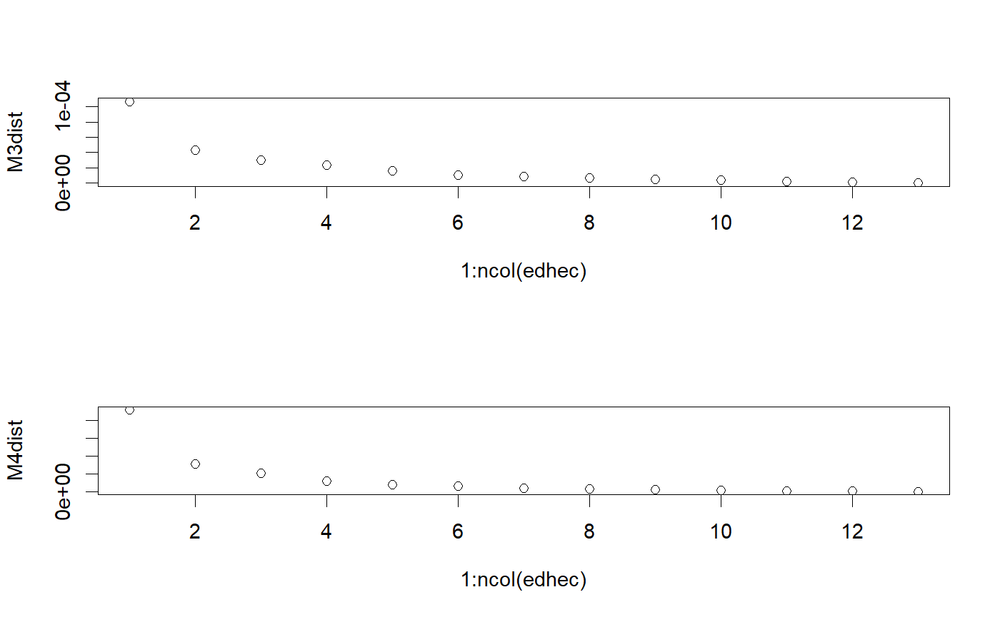

calculates MCA coskewness and cokurtosis matrices
M3.MCA(R, k = 1, as.mat = TRUE, ...) M4.MCA(R, k = 1, as.mat = TRUE, ...)
| R | an xts, vector, matrix, data frame, timeSeries or zoo object of asset returns |
|---|---|
| k | the number of components to use |
| as.mat | TRUE/FALSE whether to return the full moment matrix or only the vector with the unique elements (the latter is advised for speed), default TRUE |
| … | any other passthru parameters |
The coskewness and cokurtosis matrices are defined as the matrices of dimension p x p^2 and p x p^3 containing the third and fourth order central moments. They are useful for measuring nonlinear dependence between different assets of the portfolio and computing modified VaR and modified ES of a portfolio.
MCA is a generalization of PCA to higher moments. The principal components in MCA are the ones that maximize the coskewness and cokurtosis present when projecting onto these directions. It was introduced by Lim and Morton (2007) and applied to financial returns data by Jondeau and Rockinger (2017)
If a coskewness matrix (argument M3) or cokurtosis matrix (argument M4) is passed in using ..., then MCA is performed on the given comoment matrix instead of the sample coskewness or cokurtosis matrix.
Lim, Hek-Leng and Morton, Jason. 2007. Principal Cumulant Component Analysis. working paper
Jondeau, Eric and Jurczenko, Emmanuel. 2017. Moment Component Analysis: An Illustration With International Stock Markets. Journal of Business and Economic Statistics
CoMoments ShrinkageMoments StructuredMoments EWMAMoments
data(edhec) # coskewness matrix based on two components M3mca <- M3.MCA(edhec, k = 2)$M3mca # screeplot MCA M3dist <- M4dist <- rep(NA, ncol(edhec)) M3S <- M3.MM(edhec) # sample coskewness estimator M4S <- M4.MM(edhec) # sample cokurtosis estimator for (k in 1:ncol(edhec)) { M3MCA_list <- M3.MCA(edhec, k) M4MCA_list <- M4.MCA(edhec, k) M3dist[k] <- sqrt(sum((M3S - M3MCA_list$M3mca)^2)) M4dist[k] <- sqrt(sum((M4S - M4MCA_list$M4mca)^2)) } par(mfrow = c(2, 1)) plot(1:ncol(edhec), M3dist) plot(1:ncol(edhec), M4dist)par(mfrow = c(1, 1))